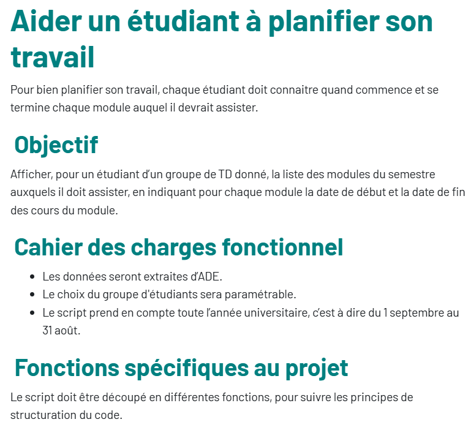
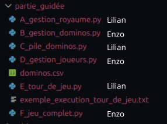
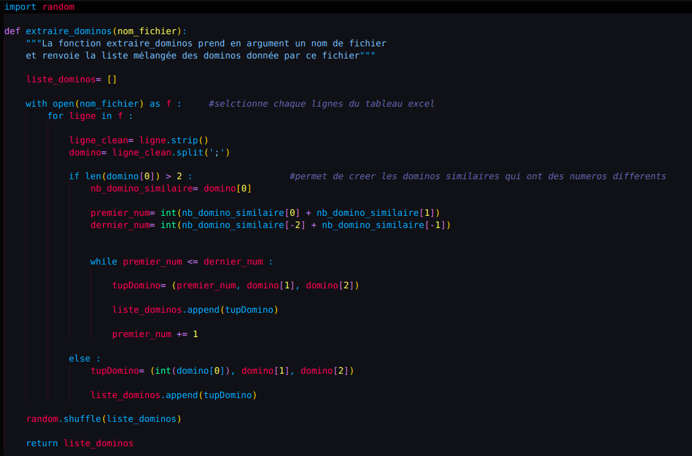
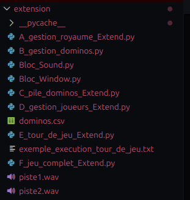
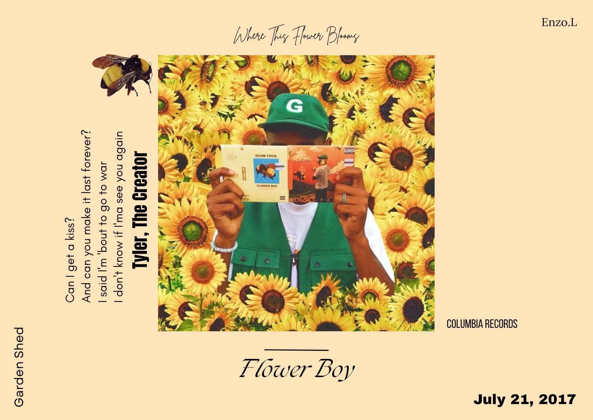
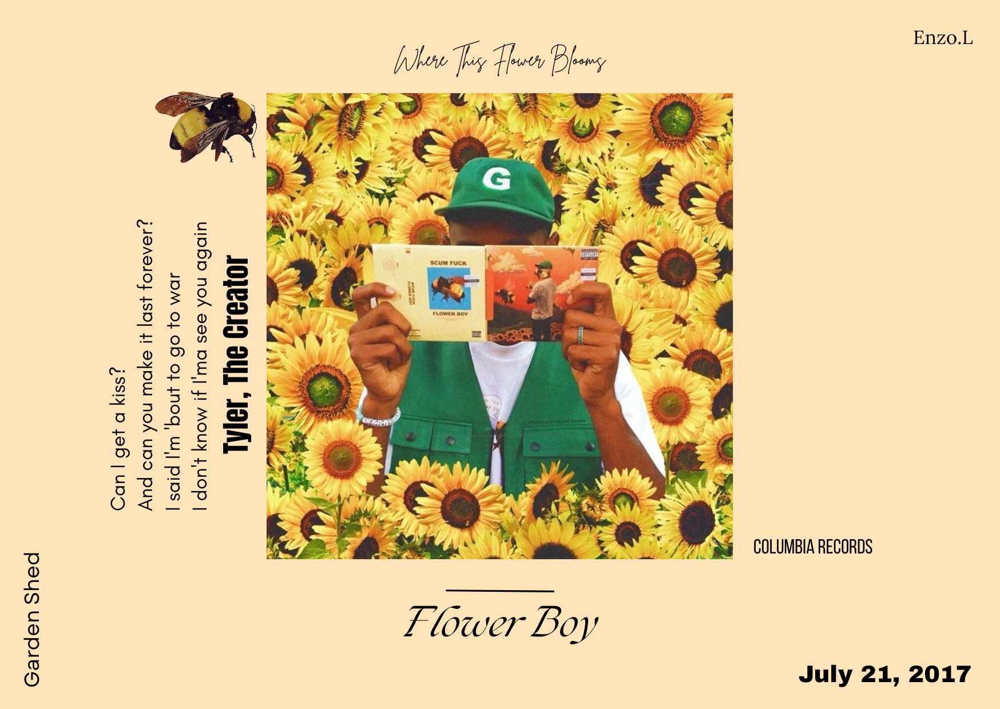

Je me présente, je suis Enzo LAMANNA, étudiant en première année de BUT
Réseaux & Télécommunications à l'IUT d'Aubière (63).
Initialement attiré par la programmation pure et son aspect logique, mon manque de clarté professionnelle m'a finalement mené vers une réorientation dans le domaine des réseaux.
C'est pourquoi j'ai choisi de poursuivre mes études en BUT Réseaux et Télécommunications (R&T), non seulement pour me spécialiser en réseaux, mais aussi pour la polyvalence des compétences offertes par cette formation.
Afin d'apprendre dans un cadre concret et d'acquérir une expérience professionnelle solide, je suis actuellement à la recherche d'une alternance à compter de septembre 2026, pour une durée de deux ans avec un rythme d'un mois en entreprise pour un mois en formation.
Sociable, curieux et rigoureux sont les trois adjectifs qui définissent parfaitement mon attitude dans un contexte professionnel.
À propos de moi
Formations
BUT - Réseaux & Télécommunications
Formation en cours : 2025 - Présent
Objectif de la Formation
Le BUT Réseaux & Télécommunications (R&T) est un diplôme de niveau Bac+3 (Licence professionnelle), accessible après le Baccalauréat. Cette formation en trois ans vise à former des techniciens supérieurs spécialisés en réseaux informatiques, télécommunications et cybersécurité (à partir de la deuxième année BUT2).
Pourquoi l'IUT d'Aubière ?
Mon choix pour cette formation à été guidé par la Journée Portes Ouvertes de l'IUT
en Février 2023, durant laquelle j'ai eu la chance d'échanger avec les enseignants et étudiants afin de clarifier mes doutes.
Ce qui m'a convaincu est l'approche polyvalente des cours, tous orientés Réseaux.
En plus de couvrir en profondeur les aspects techniques liés aux Réseaux, la formation propose des modules essentiels tels que la Communication et la Gestion de Projet, préparant ainsi l'étudiant à toutes les exigences du métier de technicien réseaux.
Enfin, le BUT R&T offre également la possibilité de réaliser des stages ou de l'alternance (sur un rythme 1/1mois), ce qui est particulièrement bénéfique pour acquérir une expérience professionnelle concrète et essentielle avant de s'insérer sur le marché du travail.
Et maintenant ?
Ayant pour objectif la validation de ma première année de BUT R&T en fin d'année universitaire 2026, je souhaite poursuivre ma formation en alternance au sein d'une entreprise pour mettre en pratique mes acquis et apprendre dans un environnement professionnel concret.
Licence - Mathématiques et Informatique
Année de réorientation : 2024 - 2025
Objectif de la Formation
La Licence Mathématiques-Informatique offre, en trois ans, une double expertise. Elle développe la rigueur analytique grâce aux mathématiques et les fondations de l'algorithmique avec l'informatique, formant des profils aptes à modéliser et résoudre des problèmes complexes. Ce socle théorique est idéal pour la poursuite d'études en Master ou en École d'Ingénieurs, avec des orientations possibles en Recherche ou en Application.
Pourquoi la Licence ?
Suite au refus de mon dossier pour le BUT R&T via Parcoursup en 2023, j'ai opté pour la Licence Mathématiques et Informatique. Ce choix m'a permis de rester aligné avec mon projet d'acquérir des compétences fondamentales en logique et en informatique.
Et maintenant ?
L'intégration en Licence n'étant pas mon choix initial, j'ai rencontré des difficultés à me projeter et à trouver la motivation nécessaire pour m'investir pleinement. Cependant, cette période n'a pas été inutile : elle m'a permis d'apprendre la vie étudiante, notamment en développant mon autonomie et ma ponctualité. J'ai alors renouvelé ma candidature pour le BUT R&T, qui correspondait à mon projet professionnel concret, et j'ai eu la satisfaction d'y être admis pour la rentrée de septembre 2025.
Baccalauréat - Série Général
Préparation du BAC : 2021 - 2024
Objectif de la Formation
Le Baccalauréat général a pour objectif principal de se préparer aux études supérieurs en offrant une culture général approfondie. De plus, les spécialités Mathématiques et NSI permettent d'acquérir les fondations nécessaires pour s'orienter vers des filières scientifiques et technologiques.
Pourquoi le Lycée Jérémie de la Rue ?
J'ai choisi ce lycée car, en tant qu'établissement de mon secteur, il me permettait d'atteindre mon objectif de poursuite d'études supérieures tout en offrant les spécialités qui correspondaient parfaitement à mon projet : Mathématiques, NSI et Physique-Chimie en première, puis Mathématiques et NSI en terminale.
Et maintenant ?
L'obtention de mon baccalauréat m'a permis d'acquérir les bases solides nécessaires en Mathématiques et en Informatique pour m'engager dans mes études supérieures.
Certifications
Cisco CCNA : Introduction aux Réseaux
Sept. 2025 - Présent
Objectif de la Certification
Cisco CCNA est une certification qui permet d'acquérir les compétences fondamentales pour l'installation, la configuration, l'exploitation et le dépannage des réseaux d'entreprise.
Pourquoi CCNA ?
Dans cette certification, j'apprends à maîtriser les fondements des réseaux en m'appuyant sur les modèles OSI et TCP/IP. L'objectif est de savoir configurer les paramètres de base des routeurs et commutateurs via Cisco IOS, tout en manipulant les systèmes de numération binaire et hexadécimal pour l'adressage. La formation permet de gérer les supports physiques, la commutation Ethernet, ainsi que la conception de plans d'adressage complexes par la segmentation de réseaux IPv4 et IPv6. La différenciation des protocoles TCP et UDP, la configuration de services comme le DNS ou le DHCP, et l'application des bases de la sécurité réseau font également partie des compétences acquises. Enfin, l'utilisation d'outils de diagnostic devient naturelle pour tester et dépanner la connectivité d'un réseau opérationnel.
Et maintenant ?
Une fois cette certification acquise, j'aurai appris les méthodes permettant de concevoir et d'implémenter une topologie réseau, en utilisant l'outil de simulation Cisco Packet Tracer, et serai capable de paramétrer la majorité des équipements Cisco.
PSC1 - Formation premiers secours citoyen
Obtenu : 2024
Objectif de la Certification
La certification PSC1 permet de préparer au mieux l'arrivée des secours en effectuant les premiers gestes de secourisme et les soins vitaux immédiats, optimisant ainsi les chances de survie de la victime. La validation de cette certification s'effectue au moyen d'exercices pratiques et de mises en situation simulant des urgences réelles comme les cas d'étouffement, de brûlures ou de perte de conscience.
Pourquoi la PSC1 ?
J'ai entrepris la démarche de faire cette certification afin de savoir secourir et protéger une personne en danger en appliquant les bons gestes. Cela m'assure de répondre avec calme et discernement aux situations de stress, sans paniquer dans un cadre personnel ou professionnel.
Et maintenant ?
Grâce à cette certification, je suis apte à intervenir et à mettre en œuvre les gestes nécessaires pour secourir et protéger une personne en situation de danger dans ma vie quotidienne.
Compétences
Hard Skills
Mes compétences techniques continuent d'évoluer et de s'enrichir grâce à ma formation actuelle.

Programation
Maîtrise des bases techniques et syntaxiques des langages Python, C, Script Bash, HTML et CSS.

Réseaux
Maîtrise des fondamentaux en réseaux : Topologie Réseaux, Configuration d'un point d'accès Wi-Fi et mise en place de VLAN sur switch Cisco.
Télécommunications
Maîtrise du diagnostic technique : analyse de signaux à l'oscilloscope, mesures optiques au photomètre et étude de câblage coaxial.
Soft Skills
Ma capacité à collaborer, ma ponctualité et ma rigueur sont les 3 atouts majeurs qui caractérisent mon approche professionnelle.
Collaboration
Je fais preuve d'une forte aptitude à la collaboration et suis capable de mener à bien des travaux d'équipe en assurant une répartition stratégique et efficace des charges pour l'atteinte des objectifs.
Curieux
Ma curiosité naturelle me pousse à explorer divers sujets et à m'investir pleinement dans l'approfondissement de mes connaissances.
Rigoureux
J'adopte une approche méthodique et approfondie dans mon travail, mais aussi dans mes activités personnelles. Mon sens du détail et ma détermination me permettent de garantir une exécution complète et rigoureuse des tâches.
Expériences
Saisonnier E.Leclerc - Mise en Rayon
Août 2024 et Août 2025
Contexte
Objectif
Assurer le remplacement d'un salarié du rayon des liquides afin de garantir la continuité du service et la disponibilité des produits durant la forte affluence estivale.
Missions
Durant cette expérience, j'ai eu plusieurs responsabilités. Tout d'abord, j'étais chargé de la mise en rayon en utilisant un transpalette électrique pour remplir les étagères et offrir un maximum de choix aux clients. Ensuite, avant l'ouverture du magasin, je faisais le facing (avancer les produits) pour que le rayon paraisse toujours plein et agréable aux yeux des clients. De plus, mon travail comprenait aussi l'organisation et le nettoyage de la réserve pour préparer l'arrivée des livraisons. Enfin, quand j'avais de l'avance, j'aidais à la mise en place dans d'autres parties du rayon des liquides.
Bilan
Cette expérience m'a offert un premier aperçu concret du monde professionnel, me permettant de développer mes compétences en organisation, de savoir identifier le bon moment pour solliciter de l'aide, de renforcer mon esprit d'équipe et d'améliorer mon relationnel avec les clients.
Stage d'observation Lubi'Carrelage - Architecture Intérieur et Vente
2021
Contexte
Objectif
Acquérir une première immersion professionnelle pour m'aider à déterminer mon orientation future, découvrir les mécanismes de la relation clientèle et explorer le domaine de l'architecture intérieure.
Missions
Au cours de cette expérience, j'ai eu pour mission principale l'observation active du métier, ce qui impliquait de poser des questions pour bien comprendre le domaine et vérifier si ce secteur m'attirait. De plus, j'ai eu l'occasion d'assister à des réunions permettant d'organiser les jours suivants et de faire un récapitulatif des semaines passées. Enfin, j'ai également pris des notes détaillées sur les techniques de communication et de relation client, et j'ai contribué concrètement en aidant au rangement et à l'organisation des carrelages.
Bilan
Finalement, bien que l'expérience m'ait permis de découvrir concrètement l'environnement de travail, j'ai réalisé que le métier d'architecte d'intérieur n'était pas la voie que je souhaitais suivre.
Projets
Projet Portfolio (HTML & CSS) : Se présenter sur Internet
2025 - Semestre 1 BUT R&T
Contexte
Objectif
Ce portfolio a pour vocation d'appuyer notre insertion professionnelle en fournissant un document détaillé de notre parcours, tout en constituant une mise en application concreétale des notions HTML et CSS acquises lors de notre première année de BUT en développement Web.
Missions
Le projet a démarré par des séances de TD fournissant une structure de base uniforme pour l'ensemble du groupe. Par la suite, le développement s'est fait en autonomie totale. La principale difficulté résidait dans cette indépendance, bien que les enseignants aient pu être consultés pour des conseils. J'ai principalement mobilisé des ressources externes (W3Schools, MDN Web Docs, Instagram et YouTube) pour surmonter les défis et résoudre les problématiques de codage rencontrées.
Bilan
En conclusion, ce projet m'a été bénéfique pour apprendre à bien organiser un projet, mettre à l'épreuve les notions vues en cours et et savoir comment me présenter sur internet de manière professionnelle et claire. Cependant, ma principale difficulté a été la découverte approfondie du HTML et du CSS, n'ayant aucune expérience préalable en langages Web avant mon entrée en BUT. Malgré ce défi, le projet a été livré dans les délais.
Projet Python : Traitement de données
En cours - Semestre 1 BUT R&T
Contexte
Objectif
En tant que futur professionnel R&T, je serai régulièrement amené à traiter des données provenant du système d’information de mon entreprise (extraction d'informations liées à l’infrastructure du réseau ou d'informations des utilisateurs). L'objectif est donc de maîtriser le traitement de ces données, notamment à l'aide d'outils comme le langage Python, afin de faciliter les tâches de gestion, ce qui permettra de faire de l'analyse prédictive, d'améliorer le réseau et de gérer les incidents.
Missions
J'ai d'abord suivi un semestre de cours de programmation Python, comprenant des TD et TP axés sur divers exercices. Par la suite, nous avons dû choisir l'un des huit sujets proposés pour un projet de traitement de données. J'ai opté pour le sujet suivant :

Pour mener à bien ce projet, la mission est de mettre en œuvre les notions vues en cours tout en découvrant la librairie Numpy. Ce travail doit être réalisé en autonomie complète, en s'appuyant uniquement sur la documentation fournie ou toute autre aide externe trouvée sur Internet.
Bilan

Projet Python/Github : Jeu de société Kingdomino
2025 - Semestre 2 Licence
Contexte
Le but du jeu Kingdomino est de constituer le Royaume le plus lucratif en connectant des tuiles (dominos) représentant différents paysages. Chaque joueur tente de former un carré de 5 cases par 5 autour de son château de départ. Pour placer un domino, l'une de ses cases doit obligatoirement toucher une case déjà présente dans le Royaume qui est soit de la même couleur (le même type de paysage), soit le château. À la fin de la partie, on compte les points en multipliant la taille de chaque zone de paysage identique (appelée domaine) par le nombre de couronnes qui s'y trouvent. Le joueur qui obtient le score le plus élevé l'emporte.
Objectif
L'objectif principal de ce projet est d'appliquer concrètement les notions abordées lors du cours de programmation Python et de gestion avec Github du premier semestre de Licence.
L'évaluation se divise en deux parties :
• 60% de la note : Réalisation d'une version du jeu jouable intégralement sur la console Python.
• 40% de la note : Développement d'une extension libre visant à améliorer le jeu initial.
Missions
Avec mon binôme, nous avons commencé par répartir les tâches du projet. Le travail s'est fait à partir du squelette Python mis à notre disposition.
De plus, il nous a fallu créer un espace projet sur GitHub et le paramétrer pour que mon binôme, le responsable du module et moi-même ayons un accès au code.

Lilian était chargé de la gestion du royaume, ce qui impliquait l'initialisation correcte du royaume selon des règles précises. Il a ensuite dû s'occuper de la pile des dominos, c'est-à-dire de la gestion des mélanges des dominos pour assurer l'aléatoire du jeu. Enfin, il a développé la partie tour de jeu en gérant la logique pour déterminer l'ordre de passage des joueurs.
Ma contribution au projet a englobé la gestion des dominos, impliquant l'extraction des données à partir d'un fichier CSV en utilisant Python. J'ai ensuite géré la partie des joueurs, assurant la création des joueurs et l'implémentation du choix entre le mode manuel ou le mode automatique (contre un "robot"). Enfin, je me suis occupé de la phase jeu complet, où j'ai développé les fonctions finales nécessaires pour appeler et coordonner les différents fichiers pour la conclusion de la partie.

La fonction extraire_dominos est conçue pour lire et traiter les données de dominos contenues dans un fichier externe spécifié (nom_fichier). Elle initialise une liste nommée liste_dominos destinée à stocker tous les dominos du jeu, chacun étant représenté par un tuple de trois éléments. L'exécution parcourt chaque ligne du fichier; si la première colonne d'une ligne est suffisamment longue (if len(domino[0]) > 2:), elle est interprétée comme un intervalle de dominos similaires à générer (cette logique est assurée par la boucle while). Si ce n'est pas le cas, un seul domino est ajouté. Enfin, avant d'être retournée, la liste complète des dominos est mélangée aléatoirement grâce à la fonction random.shuffle du module random, garantissant le caractère aléatoire du jeu.
Une fois la partie guidée du projet achevée, mon binôme et moi avons abordé la phase d'extension. Nous avons pris la décision d'améliorer le jeu en y intégrant une fenêtre graphique, le jeu initial étant exclusivement basé sur la console. Par ailleurs, nous avons ajouté la possibilité de choisir parmi deux musiques d'arrière-plan pour enrichir l'ambiance de la partie.

Mon binôme et moi avons conservé la responsabilité de nos blocs de code respectifs élaborés durant la phase guidée. Nous les avons ensuite améliorés en ajoutant des fonctionnalités essentielles, notamment la création et la navigation dans le menu du jeu et la gestion du son en fonction des différentes étapes et ambiances de la partie.
Bilan
En conclusion, ce projet a été rendu dans les délais. De plus, il m'a été bénéfique pour apprendre à gérer un projet de groupe en organisant la répartition des rôles. J'ai également eu l'opportunité d'utiliser concrètement le langage Python dans un projet à la fois amusant et enrichissant à coder. Enfin, la phase d'extension nous a permis de choisir librement des ajouts, ce qui a été l'occasion de découvrir de nouveaux modules Python.
Divers
Musique
Régulièrement
Ma passion première est le piano, que je pratique depuis plus de 12 ans. J'ai commencé par des cours particuliers, puis, quand j'étais enfant, j'ai participé à un concours de piano à Paris où j'ai fini troisième. En grandissant, j'ai continué ma progression en autodidacte. Cette pratique avait ralenti avec le début de mes études universitaires, mais je m'y suis remis activement depuis quelques mois. Je joue principalement des musiques que j'entends et qui m'inspirent dans un film, une série ou un jeu vidéo, mais mon morceau favori reste La Valse d'Amélie.
Impact sur mon quotidien
La pratique du piano m'a appris la persévérance et l'importance de recommencer jusqu'à atteindre la réussite.
Sport
Régulièrement
Après avoir expérimenté plusieurs disciplines sportives (telles que le tennis, le judo et la boxe thaïlandaise), la musculation et la course à pied se sont imposées comme des pratiques durables. Aujourd'hui, cela se concrétise par la musculation, que je pratique seul ou avec mes amis 5 fois par semaine, et la course à pied, 1 à 2 fois par semaine. Ces activités ont été adoptées dans le but de renforcer la confiance en soi, de favoriser le bien-être et d’adopter une hygiène de vie saine et équilibrée. Elles ont également contribué au développement de bonnes habitudes alimentaires, essentielles pour le maintien d’une bonne santé.
Impact sur mon quotidien
Avec ces sports, il a été possible d’acquérir des qualités telles que la rigueur, c’est-à-dire la capacité à maintenir l’effort même lorsque le confort semble plus tentant, ainsi que la patience, essentielle pour obtenir des résultats sur le long terme.
Art Plastique
Régulièrement
De nature créative, je dessine depuis mon plus jeune âge une variété de créations inspirées par mon imagination. Il me suffit d'une feuille blanche et d'un stylo pour faire émerger de nouvelles idées et donner forme à des concepts originaux. C'est pour cela que j'explore une multitude de types de création : dessin, peinture, collage, etc.
Voici un aperçu
 

Impact sur mon quotidien
Dans mon quotidien, la pratique artistique m'apporte une source constante de nouveaux sujets de création. Elle entretient ma soif d'apprendre, de me perfectionner et de recommencer, tout en développant un sens aigu de la précision.
Jeux vidéos
Régulièrement
Les jeux vidéo sont une passion essentielle pour moi, servant de mécanisme pour déstresser après mes journées. J'apprécie particulièrement les titres qui favorisent la coopération pour atteindre un objectif commun par l'entraide, ceux qui encouragent l'exploration de mondes inconnus pour en découvrir les règles, ainsi que les jeux de type bac à sable (sandbox) qui me permettent d'utiliser mon imagination pour construire librement, sans but imposé. Mon jeu préféré reste d'ailleurs Minecraft pour son mélange d'exploration et l'absence de règles strictes.
Impact sur mon quotidien
En fin de compte, les jeux vidéo m'ont permis dans ma vie d'être plus impliqué dans une tâche, de viser le meilleur niveau possible et de développer ma patience pour obtenir un succès.